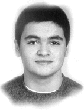
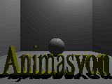
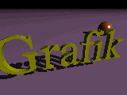
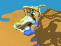
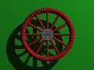
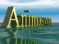

|
 Emre Demiralp Contenidos: Introducción ¿Por qué Linux? Consultores estudiantes Conclusión |
Resumen:
Linux tuvo inesperadamente muchos grupos de usuarios en
Turquía, especialmente en el ámbito académico. Entre ellos, la
Universidad Técnica de Estambul tiene un papel importante en el
desarrollo de versiones turcas y en la contribución a los
desarrollos sobre Linux en diferentes escalas. Muy recientemente,
se ha desarrollado una versión beta del Linux turco, Turkuvaz
(Turquesa), en el Departamento de Ingeniería Eléctrica de la
universidad. A pesar de que ha sido desarrollado en este
departamento por los asistentes de investigación y enseñanza
existe un gran grupo de estudiantes que usa Linux intensamente en
la Facultad de Ciencias y Letras. Los estudiantes son los alumnos
del Programa de Pregraduados de Ingeniería Matemática que está
coordinado conjuntamente por el Departamento de Matemáticas y el
Departamento de Ingeniería. Este artículo explica el uso de Linux
en este programa empezando desde el principio.
La historia empieza en 1992, cuando se planteó la modernización del programa de Ingeniería Matemática.
En aquellos días, el Departamento de Ingeniería decidió hacer cambios drásticos en la parte de software del temario. El contenido de los cursos se revisó de tal manera que el propósito de los seminarios no fuera dar conocimientos, sino enseñar como los estudiantes podían acceder a los conocimientos y usarlos eficientemente. Así pues, las clases, especialmente en los cursos orientados a los ordenadores, tomaron una estructura más dinámica para que los profesores pudieran revisar más fácilmente los contenidos de acuerdo con las necesidades diarias. Esto fue muy importante para adecuarse a los rápidos cambios que sufren la tecnología de los ordenadores y la informática.
Antes de seguir, debo mencionar brevemente lo que la frase "Ingeniería Matemática" significa en Turquía. Es una profesión interdisciplinaria en la que los que son ingenieros matemáticos pueden establecer diálogos técnicos con cualquier tipo de ingeniero. Las principales capacidades de estas personas son la creación de modelos de problemas interdisciplinarios, la creación y/o selección de los algoritmos apropiados para resolver los problemas matemáticos resultantes y finalmente el empleo del ordenador como una herramienta eficiente. Son ingenieros de software con una fuerte formación en matemáticas. Esta definición incluye la importancia del uso del ordenador en este curso.
En 1991, la disponibilidad de ordenadores dedicados a los estudiantes era casi nula. Tenían un main frame IBM, pero era solo para el personal de la facultad. Los estudiantes solo podían usar once PCs 8086. Debido a los problemas con los virus, el control de los laboratorios era una pesadilla. Los virus por sí solos no se pueden considerar un gran problema, pero el empleo de las máquinas por mucha gente agravan el problema. Había solo una solución: formatear las máquinas cuando era necesario. La situación movió a los administradores a buscar soluciones más eficientes a nivel de software, ya que la apretada situación presupuestaria no permitía la mejora del hardware.
En 1992, la Universidad compró una estación SUN IPX que introdujo el sistema operativo UNIX a los laboratorios. Poco después de esta compra, el Decano de la Facultad pudo comprar quince PC's 386. Con los problemas del virus y de administración en mente, los administradores empezaron a buscar soluciones más eficientes. El primer intento fue OS/2. Sin embargo, debido a la falta de conocimientos y experiencia suficientes, el sistema solo estuvo una semana en los laboratorios y los estudiantes ganaron la batalla al sistema: se colapsó. Afortunadamente, el jefe de los laboratorios oyó algo en BITNET sobre un nuevo sistema operativo, Linux. Se encontró la dirección y se compró el software. Era el Yggdrasil Linux. Naturalmente, la compra de este software no fue el remedio completo. Al contrario, fue el principio de un camino plagado de problemas. Sin embargo, el software era gratuito, y había un montón de información en INTERNET. Todo el mundo estaba enterado de los problemas y el largo camino que quedaba hasta su resolución. Pero el rápido desarrollo de su estructura, la existencia de la gente entusiasta peleándose con él y el hecho de que fuera gratuito llevaron a tomar la decisión: Linux se eligió como el principal sistema operativo de los laboratorios.
Pasó el primer año mientras el personal de la facultad ganaba experiencia sobre el sistema operativo, y se vio que la administración de los laboratorios no era trabajo fácil. Llevaba mucho tiempo y era casi imposible servir con unos pocos administradores a los cientos de estudiantes que se encontraban con este sistema operativo por primera vez en su vida. Un año más tarde, la compra de nuevos 386s y 486s dio más flexibilidad a los laboratorios, pero también incrementó el volumen de ordenadores que había que administrar. Como el alquiler de profesionales para el mantenimiento era demasiado caro para el limitado presupuesto de la facultad, la idea de usar a los estudiantes como administradores pareció buena. Ellos trabajarían como administradores y aprenderían más de lo que aprenden en sus cursos normales. Se les llamó "Consultores Estudiantes" y se les permitió hacer casi cualquier cosa con los ordenadores, a nivel de software y hardware, aunque lo segundo estaba más limitado debido a las necesidades de dispositivos más sofisticados para un mantenimiento riguroso (aunque ellos podiían diagnosticar los fallos de hardware y proponer los recambios). El sistema funcionó. Primero se empezó a trabajar con X Window y más tarde se empezaron a extender las herramientas de TeX y PostScript. Siguieron el gcc y otros lenguajes de programación, como Pascal, Fortran, Mathemtica, Scilab, Rlab, etc... Más tarde se creó la red y se instalarón todos los servidores correspondientes.
Hoy, hay unos cien consultores estudiantes que mantienen el sistema. Su misión no es solo mantener el sistema, sinó también encontrar, adaptar y construir nuevo software. Pasan su tiempo libre aumentando sus conocimientos y prácticas y se les dá un certificado extra cuando se gradúan. Los consultores estudiantes trabajan en nueve unidades diferentes:
Esta unidad organiza cursos y seminarios extracurriculares. Sus responsabilidades incluyen programas de seminarios y cursos de nuestra facultad y junto a otras facultades.
La unidad también organiza programas de prácticas de verano. En estos programas, los estudiantes tienen la oportunidad de incrementar sus conocimientos y experiencia a la vez que contribuyen al desarrollo y actualización del sistema.
Esta unidad ayuda a la creación de gráficos y animaciones para las presentaciones de los laboratorios y de la facultad en eventos especiales, ceremonias y páginas web. Es también responsable de la educación de los jóvenes estudiantes.
Los miembros de la unidad usan POVRAY, 3DStudio, Lightwave, PostScript y software similar. Usan principalmente Linux, y en menor medida, Windows NT.
La unidad publica un magazine online bimensual en Turco, Oluþum (que significa Formación).
Esta unidad mantiene una red instalada de manera eficiente. La red de Linux está basada en NIS y NFS. Están disponibles quotas de tiempo y memoria dinámica. Para ello se han escrito scripts en Perl, aparte de las utilidades existentes. Hay programas de citas, escritos por los estudiantes usando gcc con X y ncurses.
Existe una subunidad que se ocupa de la seguridad de la red. La misión del equipos es encontrar puntos débiles de la red y notificarlo a las autoridades. El equipo esta compuesto de hackers con hábitos buenos (!).
La unidad publica un magazine online bimensual en Turco, Eriþim (que significa Accediendo). Hay muchos estudiantes que son expertos en muchas ramas de las redes. La unidad mentiene servidores de DNS, NIS-NFS, FTP y MAIL.
El propósito de esta unidad es contruir un sistema de base de datos eficiente para la evaluación de los consultores estudiantes, ya que solo algunos de ellos tendrán la oportunidad de obtener un certificado. Los créditos para los consultores estudiantes se obtienen a través de proyectos y examenes con ordenadores. Las personas cuyos créditos exceden un cierto valor obtienen los certificados.
La unidad usa PostGres, PostGresSql, Msql y Adabas como base de datos. Hay un nuevo proyecto para la evaluación de los estudiantes a través de servidores web.
Esta unidad tiene la misión de proporcionar información sobre Linux y temas relacionados. Para este propósito, tiene varios equipos: grupo de diseño de CD, grupo de búsqueda por Internet, grupo de traducciones y naturalizaciones de términos extranjeros y grupo de lenguajes de documentación. La unidad publica un magazine online bimensual en Turco, Yazýlým Daðarcýðý (que significa Pequeño Tesoro de Software).
La unidad utiliza programas de grabación de CDs, browsers, TeX, LaTeX, PostScript, MetaFont, MetaPost, etc...
Muy recientemente, se ha iniciado un trabajo en Python.
La unidad coordina proyectos para el desarrollo de systemas de Linux existentes en los laboratorios. Los programas nuevos o existentes pero todavía no utilizados, se ponen a disposición de los estudiantes. Hoy, los proyectos más populares son sobre Perl, Gawk, Tcl-Tk y Python.
Esta unidad ayuda a incrementar el conocimiento y experiencia en los lenguajes de programación más importantes. Para ello, se consideran lenguajes estructurados, como C, Pascal, Fortran, etc..; lenguajes orientados a objetos, como C++, objc, Java..; lenguajes de inteligencia artificial como Lisp, Prolog, etc...; intérpretes simbólicos, como Mathematica, Reduce, etc...
Esta unidad es responsable del mantenimiento y diseño de los sitios web de la Facultad y de los servidores web. Usan Apache y Netscape Fasttrack como software de servidor web. Para el diseño de los materiales de los sitios web se utiliza HTML, Java, JavaScript y Gimp.
La unidad mantiene también un mirror del website de LinuxFocus.
La unidad es responsable de ayudar en la actividades de enseñanza de la facultad y de los laboratorios. Están también involucrados en un proyecto de enseñanza a distancia.
A pesar de que los laboratorios están totalmente dominados por Linux, también hay unas pocas máquinas con Windows NT. Esto proviene de las necesiades de otros programas de la facultad: Física y Química.
La unidad mantiene una pequeña red NT. LA administración se realiza con Samba y Linux. NT no tiene quotas de memoria, al menos de momento, y por ello es dificil hacer un sistema compartido como NFS. Sin embargo, Linux y Samba lo facilitan.
A pesar de que casi todas las utilidades para NT están disponibles para Linux, mucha gente todavía prefiere usar productos Microsoft. Es, naturalmente, una cuestión de gustos, y nuestros laboratorios necesitan proporcionar estas utilidades para esta gente..
Hoy, después de nuevas compras de ordenadores, los laboratorios de la facultad se han mejorado. El sistema tiene 70 máquinas con un Pentium 166, 55 de las cuales tiene Linux instalado. El mantenimiento se realiza mediante el sistema de consultores estudiantes que hemos explicado. El sistema atiende a unos 500 estudiantes 24 horas al día y el record sin ningún colapso es de 90 días. El sistema usa NFS y NIS y quotas y gobierna también a una subred NT. Es una buena experiencias en la historia de Linux. Los laboratorios añaden anualmente unas 50 personas educadas y entrenadas a la comunidad de ordenadores y software de Turquía. Y como punto final, podemos decir que todos los estudiantes que empiezan desde cero, o cambian desde otro sistema operativo a Linux, nunca piensan en abandonarlo. Disfrutan usando Linux, y la Comunidad de Linux Turca crece cada día con nuevos miembros. Aquí hay algunos ejemplos de gifs animados creados por nuestra unidad de Gráficos y Animación.
    Texto original en Inglés
Traducido por Hugo Lastras y Danilo
|
Páginas web mantenidas por Miguel Ángel Sepúlveda © Jose M. Fernandez 1998 LinuxFocus 1998 |